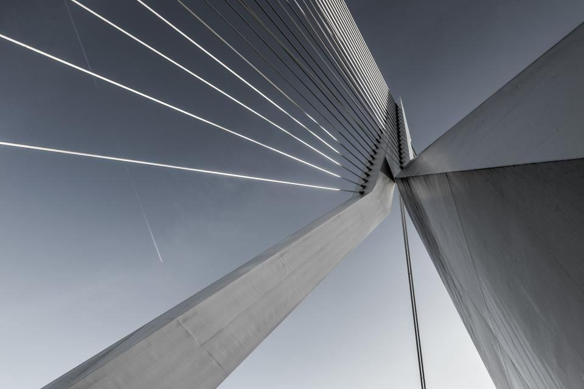
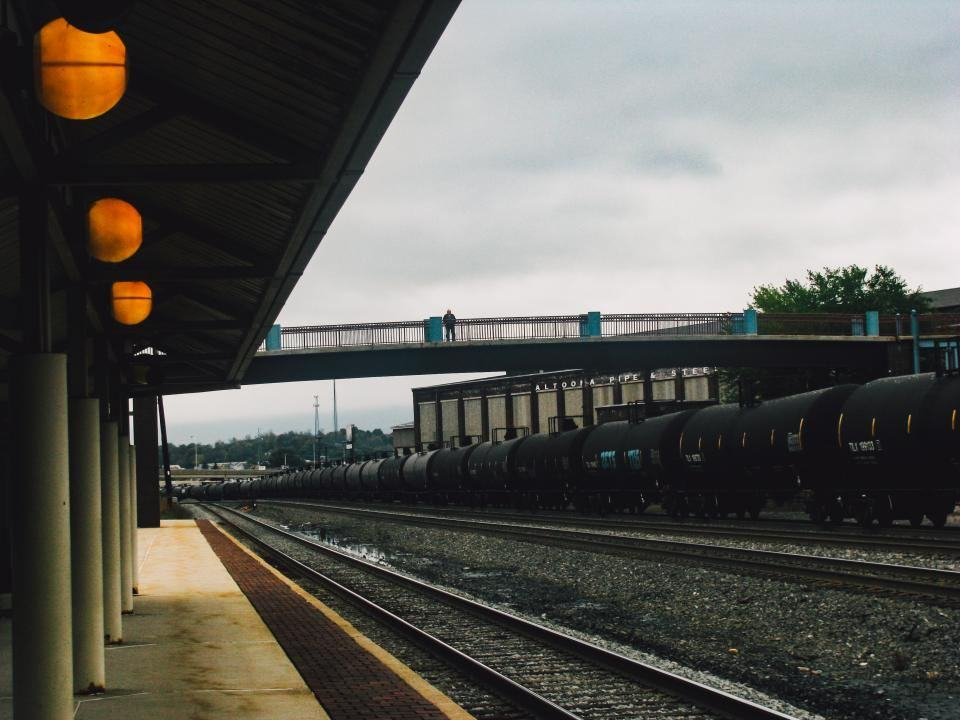
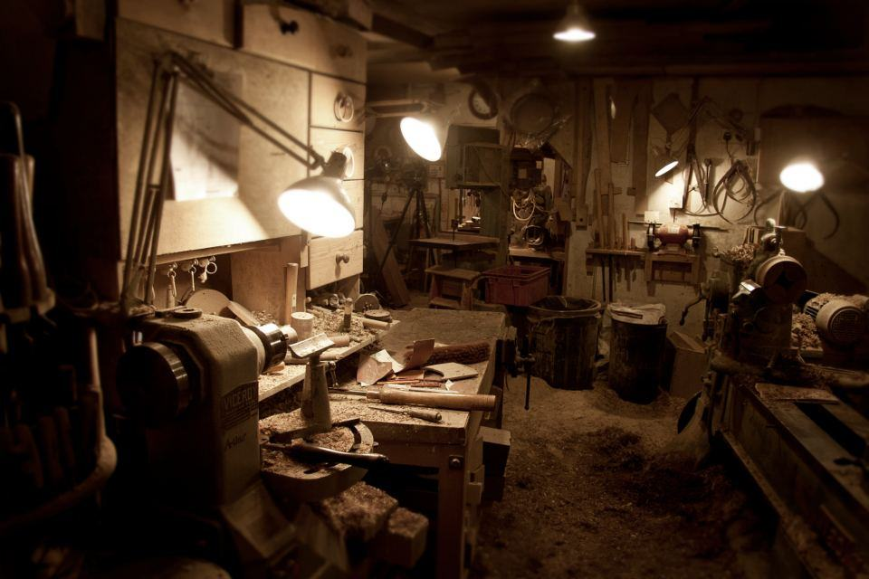

01 / 09Huvudkontor
Sundsvall
Huvudkontor och koncernens första kombiterminal vid Birsta.

9,2 miljoner kvadratmeter logistikyta i sex länder – och 71 procent av den har eget stickspår. Skönvik bygger Nordens godsnät från Sundsvall.


Skönvik bildades 1998 när hamnbolaget i Sundsvall sålde sina magasin och kombiterminalen vid Skönviksområdet. Grundidén var enkel: köp och bygg lager där godset redan byter transportslag. I dag äger koncernen 412 fastigheter och omsätter 14,2 miljarder kronor.
Alla nyckeltal


Illustrationsbilder

Vi kartlägger kundens godsvolymer, ursprung och leveranstider innan vi föreslår läge.

Vi väljer tomt i en av våra 46 noder och ansöker om spåranslutning hos Trafikverket.

Totalentreprenad med fast pris och tillträde 14–18 månader efter undertecknat avtal.

Vi förvaltar fastigheten och kan även sköta terminal, omlastning och tågplanering.
Illustrationsbilder
46 noder, alla med järnväg, motorväg eller hamn inom två kilometer.
Huvudkontor och koncernens första kombiterminal vid Birsta.

Nordens största järnvägsnod, med 1,4 miljoner kvadratmeter lager.

Terminal och lager vid Svågertorp, port mot kontinenten.

E-handel och kyllager i Torsvik.

Terminal vid Alnabru och lager i Groruddalen.

Lager för finsk dagligvaruhandel.

Danmarks transportcenter vid Lillebæltsbron.

Hamnmagasin och färjeterminal mot Polen.

Logistikpark vid Rhenkorridoren i Nederländerna.
 01 / 04
01 / 04Uthyrning och förvaltning av logistikfastigheter i Sverige, Norge, Finland, Danmark, Polen och Nederländerna.
Till Skönvik Fastigheter
02 / 04Kombiterminaler och omlastning med egna kranförare och reachstackers.
Till Skönvik Terminal
03 / 04Detaljplaner, upphandling och byggledning av nya logistiknoder.
Till Skönvik Projekt 04 / 04
04 / 04Magasin och kajer i Sundsvall, Gävle, Norrköping och Gdynia.
Till Skönvik Port”En lagerlokal utan spår är en lastbilsterminal, oavsett vad det står på skylten. Därför börjar vi alltid med att titta på kartan över järnvägen.”
Illustrationsbilder

88 000 kvadratmeter med två stickspår och 140 lastportar.

Två nya 750-meters spår och en tredje portalkran ökar kapaciteten med 60 procent.

32 000 kvadratmeter med koldioxidbaserat kylsystem och solceller på hela taket.

Ett 24 000 kvadratmeter stort magasin för sågade trävaror med direkt kajanslutning.

Tre byggnader om totalt 110 000 kvadratmeter vid Rhenkorridoren.

Cross dock-terminal med 210 portar, i drift dygnet runt sedan hösten 2024.

Det största klimatbidraget gör vi genom att flytta gods till järnväg. Under 2025 gick 1,1 miljoner lastbärare på räls via våra terminaler. Samtliga nybyggda lager certifieras enligt Miljöbyggnad Guld eller BREEAM Excellent.
Läs om vårt hållbarhetsarbete